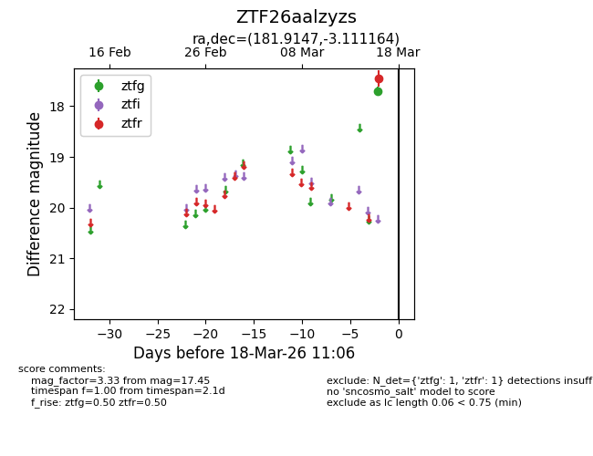
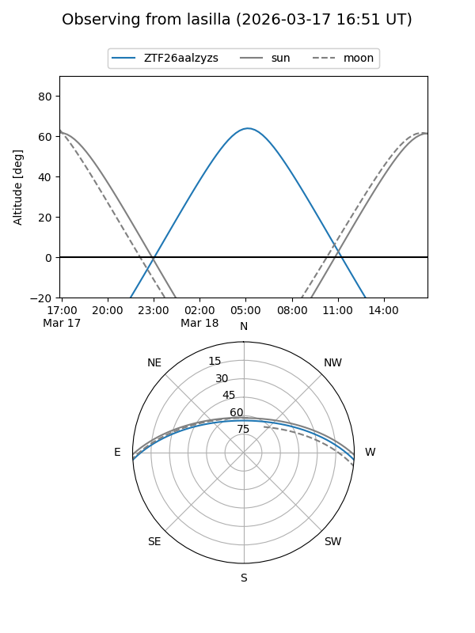
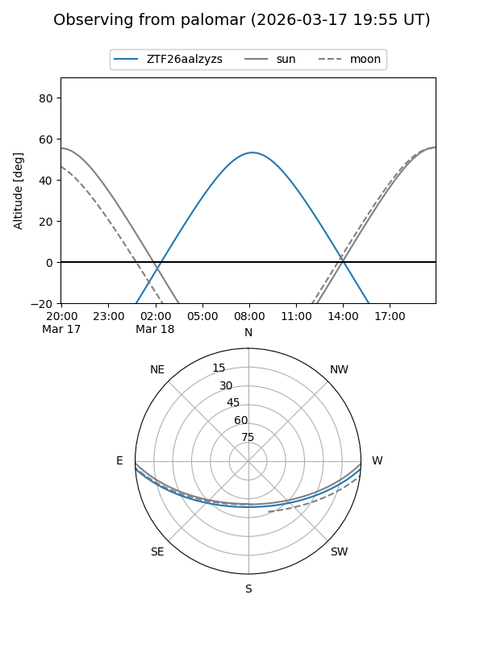

ZTF26aalzyzs
Target ZTF26aalzyzs at 2026-03-18 11:08
Aliases and brokers:
FINK: link
Lasair: link
ALeRCE: link
alt names
ZTF26aalzyzs (ztf,fink_ztf)
Coordinates:
equatorial (ra, dec) = 181.9147,-3.11116
equatorial (HMS+DMS) = 12:07:39.52,-03:06:40.19
galactic (l, b) = (281.9881,+57.96929)
Flags:
Photometry:
last ztfg=17.70, ztfr=17.45
1 ztfg, 1 ztfr detections
Lightcurve

Visibility


Additional plots